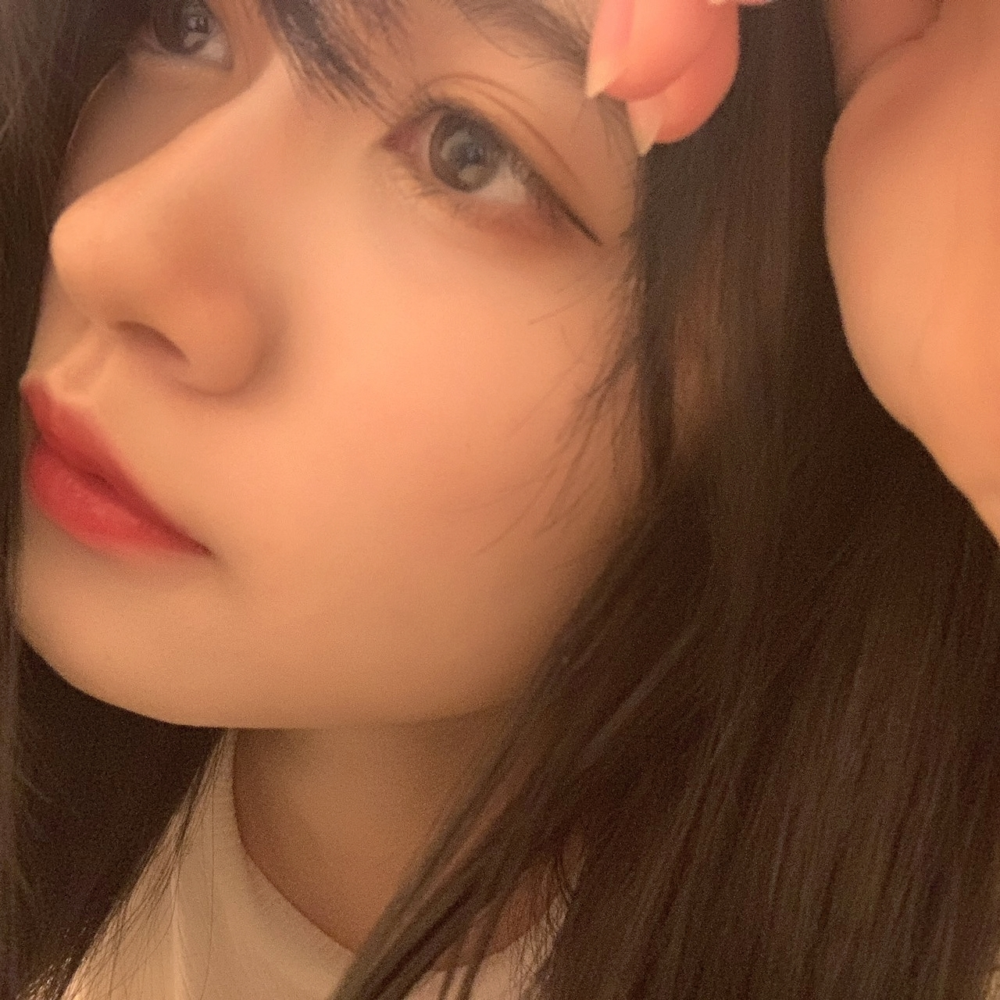
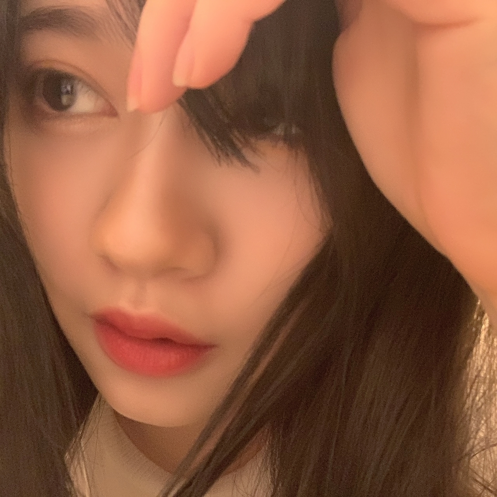
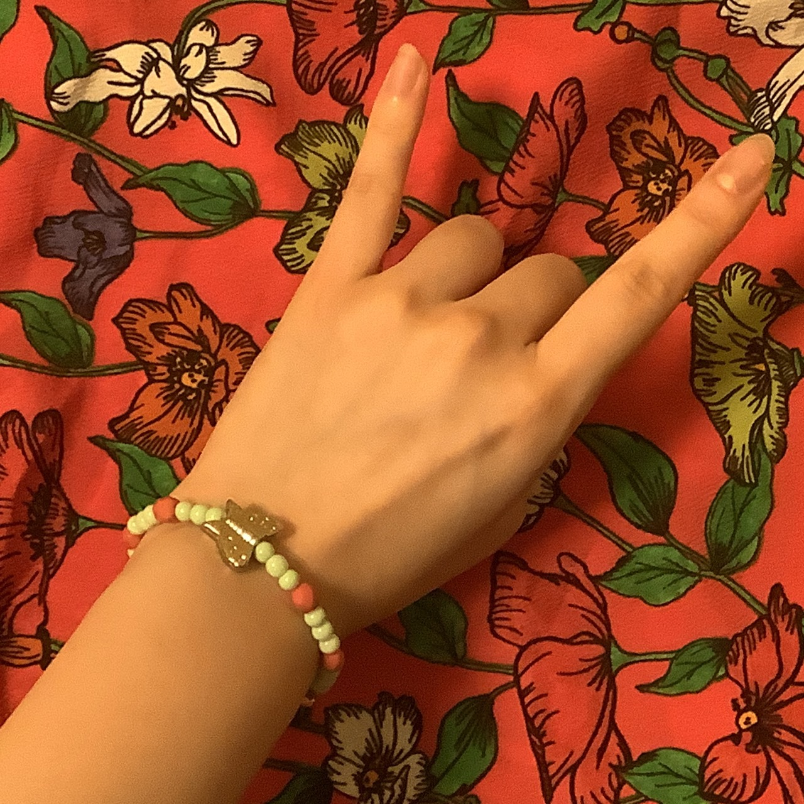

2020/0614Sunlove
おはようございます
こんにちは
こんばんは
いつも、ありがとうございます。
寺田蘭世です。☺️
最近は、アクセサリー作りました！
今はビーズ沢山欲しいです！
これにミサンガを作って
シンプルなTシャツにジャラジャラーっとアクセントで沢山付けたいですねこの夏は！！
ミサンガ小学生以来
覚えてるかな作り方、、、！
それと再び流行りの来ているシュシュも自分のお洋服からリメイクして作ったりしてます。☺️
髪色変えたとモバメでは報告していました。
46時間TVまで秘密にしようと思っていたのですが、、、
メンバーや
写真で見せた友人には
いいねーと評価いただけたのですが。
どうなのでしょうか。
でも、毎月髪色変えても
1年は12ヶ月ですから12色しか試せなくて
そう考えると短く感じますよね。
数字で改めて見つめ直すと
新しい事に挑戦したくなりませんか。
大切に楽しまなきゃ。☺️
色んな自分を皆さんも楽しんで下さいね。☺️
乃木坂工事中宜しくお願い致します。☺️



2020/06/14 18:12


コメント(1027)
らんちゃんえぐ！！！！
努力の証拠ですね。
また次髪色変わるのが楽しみっ♪
髪色、とってもお似合いですよ
毎回の楽しみ増えた〜
髪色やばい。かわいい。似合いすぎ。
俺にもアクセサリー作って。
俺的には暗めの方が好きかも！
アクセサリー良きだね✌️
そう！
ブログの最後の写真ラッシュが好きなのよ。
この表情。
最高じゃん！
46時間テレビ大変だと思いますが、体調にはお気を付けて頑張ってください。
毎回の楽しみ増えた〜
超いいです！！！！！好きです！！！泣
新しい髪色もめっちゃ似合ってるよ♪
ごめんなさい
、、、、
お疲れ様です
アクセサリー素敵ですね(^^)
常に新しいことにチャレンジしてる蘭世好きです！
乃木中楽しみにしてます！
髪色変わってからすごく見たかったのでめっちゃ見れて嬉しいです！
すごく似合っていて可愛いです！
たくさんの蘭世の写真ありがとう！
最後のアクセサリーすごく可愛いです！
髪色似合ってます！
素敵な髪色ですね！
46時間まで見れないと思ってたから、びっくりしましたが笑
今日の乃木中楽しみにしてます！
では！
だにえる
髪色めっちゃいい感じ！暗いのも明るいのも似合いすぎて可愛すぎる！さすがすぎる！ドアップの写真でも伝わる美しさ大好きー！！！握手会で早く会いたいなー！！
ミサンガもかわいい！蘭世が作ったやつ欲しいw
新しい髪色すごい似合います
色々な蘭世が見れて嬉しい！！
46時間テレビが近くなってますね
今から楽しみです
2期生の企画も蘭世の電視台も楽しみです
自分事ですが今日仮免試験を受けました
1発合格できて嬉しかったです
蘭世は免許ほしいですか？
いつもありがとう
ユースケ
モバメにブログとファンのために色々してくれる蘭世最高です(^^)
早く蘭世プロデュースのサコッシュを使いたいな、、、
こんにちは
こんばんは
こちらこそいつも、ありがとうございます。
りおんです。
蘭世先生はどの髪色が似合って羨ましいです！！
今度、白みたいな銀みたいな髪色にしたいんですけど、ちゃんと似合うか分からないんで怖いです。
乃木坂工事中楽しみにしてます！
広島住みの璃音
ミサンガ懐かしい〜、小学生の頃よく作ってわー
蘭世ちゃんアクセサリー作るなんて凄いです！
髪色いいね！かわいい！似合ってますよ！
今日の乃木坂工事中楽しみです！みますねー
髪色は自分が好きな色ならなんでもいいと思うよ！
でも、欲を言うと蘭世さんの髪色は赤をいれたときがやっぱり好きだったなー
でも色々な色の蘭世さんも見てみたいので、これからも色んな色に挑戦してください！
今日の乃木中楽しみにしてますね！
琉聖
こちらこそいつもありがとうございます！
アクセサリーいいね！
自分は昔ちょっとしたアクセサリーじゃないけど飾り物作ったりしてました。
やってる時は時間を忘れてできるし、楽しいし、達成感あるからいいよね！
髪色似合ってます！
明るくなってるのかな？って思ってたけど少し暗めですね！
でも蘭世さんらしくて良き良きです！
自分も新しいことにたくさん挑戦したいな！
蘭世さん元気で何よりです！
体調には気をつけてね！
大好きです
いいなぁー！俺もアクセサリー欲しいなぁー！
蘭世のそういう何事にも挑戦する姿を見て俺も新しいことにもっとチャレンジしなきゃいけないなって気持ちにさせてくれるからすごく感謝してます！そして、惚れてます！
俺もまた新しい事ができるようになったら握手会とかで伝えるね！
名古屋の握手会で1日でも早く会って話せる日を楽しみにしてます！
蘭世！大好きだよ！
自作のアクセサリーですか！
器用だねやっぱり笑
ミサンガとかも作れるのは凄いなぁ。大量のアクセサリーとシンプルなTシャツで夏を過ごすの、とてもオシャレです。
僕もアクセサリー似合えばそういうのやってみたいな
髪色、とても素敵です
暗い色に染めたのね、良きです！
また新しい蘭世さんを見れて嬉しいな。
乃木中絶対見るからね〜！
大好きです。
ユウキ
『スイミー』という物語を習った
記憶があります
(´･ω･｀)知らんがな
はこのスイミーが大好きで
力をあわせて大きな魚に
立ち向かうときに
真っ黒なスイミーが
「ぼくが、めになろう」と
自分のコンプレックスを
強みに変えていく姿勢に
子供ながらに感心した覚えがあります
乃木坂は一人ひとりの個性が
とても強いですね
それこそ誰でも目にもなれれば
ヒレにもエラにも顔にもなれる
だけど
鱗にはひょっとして自分にしか
なれないかも
あるいはヒゲはこの魚にしかないぞと
乃木坂という個々が輝いてる
素晴らしいグループの中で
そんな存在であれればいいね
いっそのこと羽根を生やして
飛んでいったら素敵なんじゃないかな
アクセサリー素敵！！かわいい〜（>_<）
髪色素敵だったよ！似合ってた！！♡♡
今日はね、お友達と遊びに出かけたよ〜〜！
昨日お家に来てくれたんだけど蘭世の写真みて美凪かと思った〜って言われてね、嬉しかった（>_<）！
最近蘭世風メイクを研究してみたり、、
ほんとに私の憧れです（>_<）
長野ではすごい雨降ってたけど東京はどうなのかな？？
また一週間頑張ろうね！
次の更新も待ってます
めっちゃかわいいです！
お体にお気をつけて頑張ってください！
アクセサリー作りいいですね
シンプルな服装になりがちな夏だからこそ楽しめるところを楽しんでる姿本当に見習いたいです
明るい色が続いてたイメージなので美しさとおしとやかさがマシマシに見える気がします
やっぱりどんな色でも似合ってしまいますね
乃木坂工事中しっかりと見逃さないように待機しておきます
新しいこと沢山挑戦して自分のスキル高めて他人の役に立ちたいと思います
夏バテに気をつけてお元気にお過ごしください
いつもありがとう
蘭世の料理の写真が見たいな、
いつかモバメで見えるかな
ブログで発信してくれる回数がいつもより増えて嬉しいです。ありがとう。お身体にお気をつけて〜。
アクセサリー作ってるんか！すごいなー、やっぱ手先器用なのはいいね
俺は結構不器用だからモノ作りとか苦手やな
髪色変わったね！この前よりは暗めだけどこれもまた良きですね
大人っぽさというか大人しさが感じられて好きですよ
梅雨っぽいのかな？もしかしたら
お！毎月変えるんですか？12色の蘭世さんを楽しめたらそれは毎月新鮮で楽しいだろうなぁ、どんな色でもお似合いの蘭世さんだからまた変わる時は楽しみにしてますね！
それでは、また！
いつもありがとうございます。これからもよろしくお願いします。大好きです。
UY
ミサンガ、中学の頃めっちゃ流行って作ってたよ〜。懐かしい！
新しい髪色も可愛すぎる（ ; ; ）！！！っていうかここまで暗めなのは久しぶり？
髪の毛もサラサラだしお顔も可愛すぎるし、っていうか肌綺麗すぎるし意味わからないです、羨ましい（ ; ; ）
私も蘭世ちゃんみたいになりたいです！蘭世ちゃんみたいになることは無理だけど、色々見習って努力をせねばだなぁ。
乃木中もちろんリアルタイムで見るし、録画もするよ！！楽しみすぎる！！
工事中楽しみにしてまーす！
46時間テレビも楽しみにしてまーす！
蘭世♪ 更新ありがとう
髪色…黒髪復活ですかああああ(*´艸`)
久しぶりに見たけどやはりいいね！似合ってるよ♡
これは直接握手とかで感想伝えたかったなあ〜
アクセサリー作り昔よくお姉ちゃんとかやってたっけな〜。
乃木坂工事中 明日仕事で早いからリアタイは厳しいけど録画してあるから明日仕事終わったら必ず観るね！！
更新ありがとう！！
今日も一日お疲れ様です
アクセサリー自作するのか！すごいな！
是非僕の分も作ってください！笑
やっぱオシャレな人はアクセサリー付けるんだな。メモメモ。
おお！髪色暗くしたんだ！
なんか良い意味で幼く見えるね！
僕はブリーチ2回して色落ちしてかなり明るくなってきたんですが暗くしたいと思っていたので蘭世さんくらい暗くしようかな！
もし良ければ何色にしたのかモバメででも教えてください
僕も毎回、髪型も髪色も変えて楽しむようにしてますよ
新しいことって緊張もあるけどワクワクするよね！
世の中楽しんだ者勝ちです！
乃木中見てから寝るよ！明日もゼミ頑張るね
蘭世も頑張って！！
大好きです
こんにちは
こんばんは
ブログ更新ありがとう！
ミサンガ自分で作ったこと無くて貰い物ばっかです笑
黒黒っぽい感じ！こちらも良く似合ってます！！
乃木中楽しみますー！
手綺麗すぎます…
大好きです
そうや
素敵な髪色です。、
お見せしてくださり、ありがとうございます。
コメントする